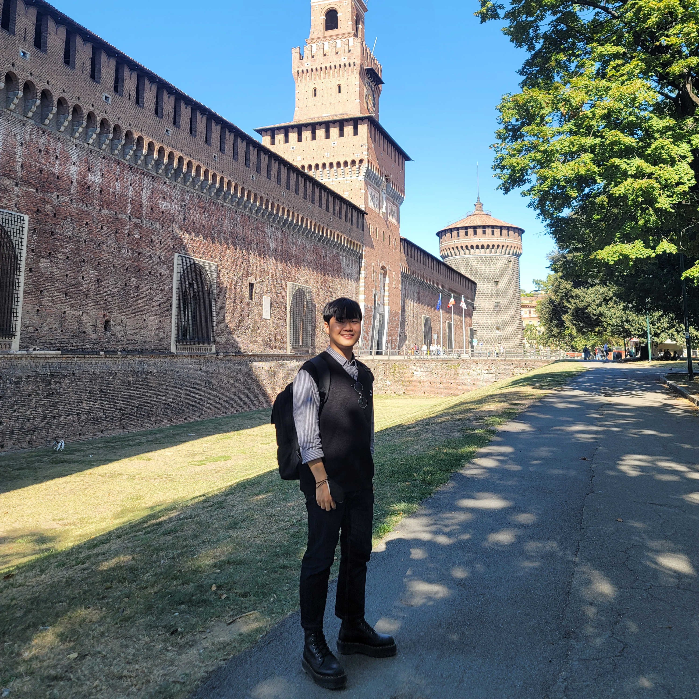

E-mail: seunghy@unist.ac.kr
Office: UNIST 302-2, Engineering Bldg. 106
I received B.S. in Information Communication and Electronics Engineering at The Catholic University of Korea in 2022. Currently, I am pursuing Electrical Engineering at UNIST from 2022 to 2023. I'm a member of SIC-X Laboratory under the supervision of Professor Jinseok Choi at KAIST. My primary research interest is wireless communications.
I also run a blog. It summarizes not only the theories and papers I have studied previously, but also encompasses all the content I am currently studying. For additional information on my research topic, please visit my blog.
Aug. 2019 - Feb. 2021: I was an undergraduate intern of Communication and Signal Processing Lab. (CSPL) at CUK
Mar. 2022 - Feb. 2023: I was a member of Intelligent Wireless Communication Lab. (IWCL) at UNIST
Mar. 2023 - : I'm now a member of SIC-X Lab. under supervision of professor Jinseok Choi at KAIST
04. Dec. 2020: Winning the Encouragement Award in the Free Topic Category of Hanium ICT Contest, Ministry of Science and ICT, Korea
11. Dec. 2020: Winning the Silver Prize in the Smart Marine Logistics Category of Hanium ICT Contest, Ministry of Science and ICT, Korea
14. Dec. 2020: Award for Encouragement of Academic Research Conference in the Department of Information Communication and Electronics Engineering, The Catholic University of Korea, Korea
17. Dec. 2020: Yun Mo Kang, Yun Ho Kang, Jae Seong Shin and Seung Hyeong Yoo, “Ship Apparatus and Controlling Method of The Same” Korea - Application No.10-2020-0177604